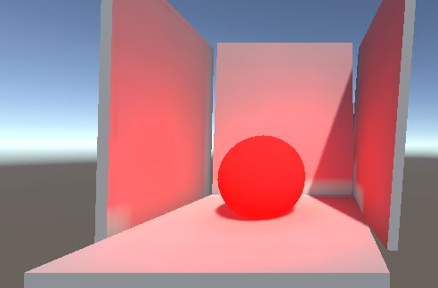

Lab 3: Materials
Materials Introduction
Materials are a way to give your Scene assets a better look. To give them more color rather than that old dimly gray. Unfortunately, Unity’s Material Editor is nowhere near as powerful as Unreal’s node-based editor, but for the purposes of this course you just need some basics.
With and without Materials (and a couple million dollars)
Your first Material
Inspecting a Material
In order to create a material, right click in your Assets Explorer > Create > Material. Clicking on the newly created material will show the material information in the Inspector. By default all new materials are created with Unity 5’s Standard Shader, more on that later. In the Inspector, you can see all the Material properties.
Material Properties
A Material using the Standard Shader has a couple basic properties; Albedo, Metallic, Normal Map, Height Map, Occlusion, Emission, and Detail Map. These properties control various facets of how the material will render. Each property can take a supplied texture as its’ arguments. Some properties allow for a Color, or value, to be supplied without a texture.
-
Same Material, different Albedo Maps
Albedo
Albedo is the base color of the Material. Assigning a map to this will effectively texture the entire material. When textured, the additional Color slider controls how the texture is perceived. A color value of white leaves the texture unchanged, changing to black darkens the texture to no detail. When supplying no map, the additional Color slider acts as the main Color for the material. Set the Slider to red makes the material red, setting to black makes it black, etc.
-

Smoothness: 0, 0.5, 0.75, 1.0
Metallic
The Metallic property defines all the metal-like properties of the Material. This ranges from the roughest metal, with no shine, to the smoothest metal, with a lot of shine. It has two sliders and a Source field. The Metallic slider defines how much metal-like the material is, and likewise how much of the effect should be applied. The smoothness slider defines how smooth the material is. When a material is smooth, it reflects its surroundings. The Source Dropdown has two options; Albedo Alpha and Metallic Alpha. This sets the effect of the smoothness to either the Alpha Channel (how transparent a texture is) of the Albedo Map or the Metallic Map. The Source Dropdown requires that a Map be supplied in order to get the Alpha Channel.
-

Albedo Only, Albedo Only + Normal Map, Albedo Only + Height Map
Normal Map/Height Map
A Normal Map, also referred to as a Bump Map, describes additional bumps on the geometry without creating additional polygons in the model. Both the Normal Map and Height Map properties take only a texture as an argument.
-

Example of an Emissive Material
Emission
The Emission property defines the color and intensity of the light emitted from the surface. Materials that utilize the Emission property can be thought as Self-Illuminated, wherein the object itself can be a light. Apart from a texture, the Emission property has three fields; the Emissive Color, its Intensity, and the Global Illumination source. The Emissive Color is what the material will the emit and its Intensity is how much it will emit. The Global Illumination (GI) source specifies whether the Illumination is Baked into the Scene, or calculated during runtime.
Modifying Materials from Script
Accessing a Material from C# requires an additional step compared to getting other components. In order to obtain a Material, you must first get the Renderer component, and then use the material field. If your GameObject has more than one material assigned to it, you must use the materials field as the material field only returns the first material on the GameObject.
GameObject.GetComponent<Renderer>().material
GameObject.GetComponent<Renderer>().materials
Now you have full access to the Material. Unfortunately, the naming conventions don’t remain the same. In order to get the Albedo color, you must use the color field. The Methods for setting properties are SetColor(string, Color), SetFloat(string, float), SetInt(string, Int), and SetTexture(string, Int). Getter methods follow the same naming convention but only require a string argument. Check out these examples to see the methods in work.
Scripting Examples
Random Color Generator
This script generates and assigns a random color to whatever it’s attached to. It does this by assigning to the Color field.
using UnityEngine;
using System.Collections;
public class RandomColor : MonoBehaviour {
public GameObject ObjectToChange; //Assign a GameObject in the Inspector
private Material ObjectMaterial; //Our Material Reference
// Use this for initialization
void Start () {
ObjectMaterial = ObjectToChange.GetComponent<Renderer>().material; //Get the Material to edit
}
// Update is called once per frame
void Update () {
if (Input.GetKeyDown(KeyCode.R)) { //Only fire if the User hits the 'R' key
Color newColor = new Color(); //Create a new Color to supply values
newColor.r = (float)Random.Range(0f, 1f); //Generate a Random Float from 0 to 1
newColor.g = (float)Random.Range(0f, 1f);
newColor.b = (float)Random.Range(0f, 1f);
ObjectMaterial.color = newColor; //Set the color to new constructed Color
}
}
}
Metallic Looper
This script loops through from 0 to 1 and then from 1 to 0 by utilizing the SetFloat() method.
using UnityEngine;
using System.Collections;
public class MetallicLoop : MonoBehaviour {
public GameObject ObjectToChange; //Assign a GameObject in the Inspector
private Material ObjectMaterial; //Our Material Reference
private float glossyValue = 0;
bool increase = true;
void Start () {
ObjectMaterial = ObjectToChange.GetComponent<Renderer>().material; //Get the Material to edit
ObjectMaterial.SetFloat("_Metallic", 1f); //Set the Metallic property all the way up
}
void Update () {
ObjectMaterial.SetFloat("_Glossiness", glossyValue); //Set the Value of Glossiness
if (increase) {
if (glossyValue >= 1) {
increase = false; //Can't increase anymore, start decreasing
}
else {
glossyValue = glossyValue + 0.005f;
}
}
else {
if (glossyValue <= 0) {
increase = true; //Can't decrease anymore, start increasing
}
else {
glossyValue = glossyValue - 0.005f;
}
}
}
}
Property Reference
Scripting with Shaders is fairly straight-forward if you have access to the Property names, so we've compiled a list of the Property names.
| Textures | Floats | Colors |
|---|---|---|
| _BumpMap | _BumpScale | _Color |
| _DetailAlbedoMap | _Cutoff | _EmissionColor |
| _DetailMask | _DetailNormalMapScale | |
| _DetailNormalMap | _DstBlend | |
| _EmissionMap | _GlossMapScale | |
| _MainTex | _Glossiness | |
| _MainTex | _GlossyReflections | |
| _MetallicGlossMap | _Metallic | |
| _OcclusionMap | _Mode | |
| _ParallaxMap | _OcclusionStrength | |
| _Parallax | ||
| _SmoothnessTextureChannel | ||
| _SpecularHighlights | ||
| _SrcBlend | ||
| _UVSec | ||
| _ZWrite |